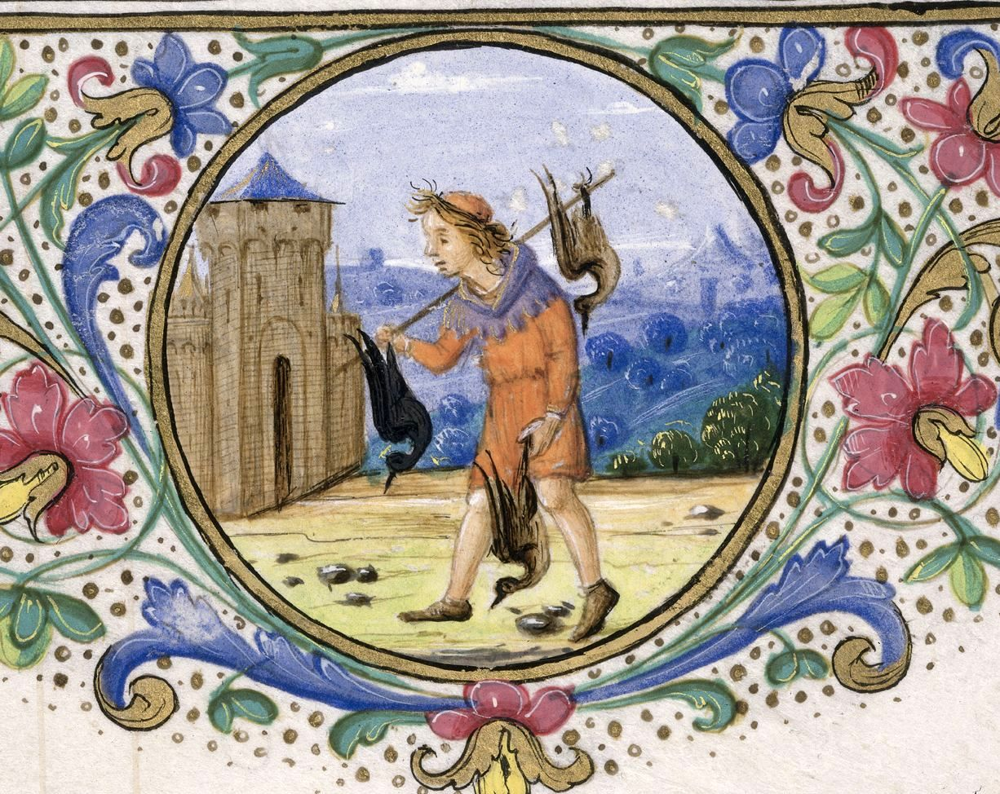
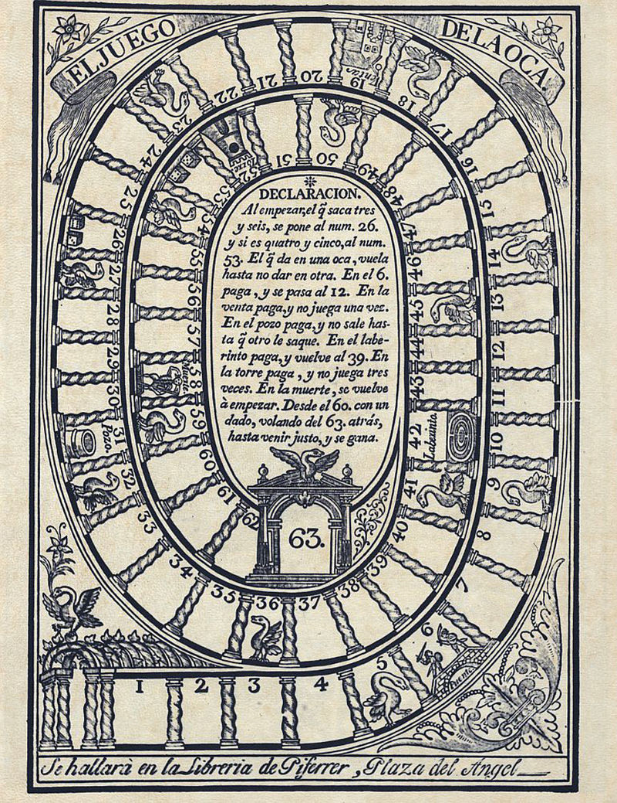
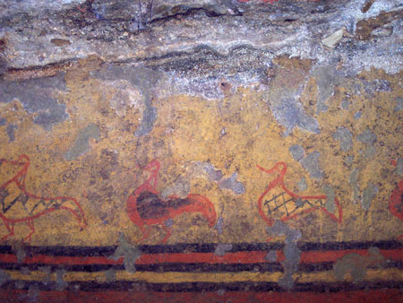

Oche Nella Mitologia
L’oca, nel suo primo significato del termine, riferito all’animale selvatico o addomesticato,
è sempre stato al centro delle attenzioni da parte dei popoli e delle credenze folcloristiche:
- Nella cultura e credenza celtica e slava, le oche erano donne sovrannaturali; la stessa dea
Epona era rappresentata come un’oca con le corna. L’oca è l’emblema della dea della guerra;
- Nella mitologia irlandese, le oche sono le epifanie dell’altro mondo;
- Nella cultura egizia, Iside la figlia del Dio della Terra, era rappresentata come un’oca;
- Nella cultura greca e romana, le oche erano attente guardiane, sacre a Giunone avevano
salvato il Campidoglio dall’assedio dei Galli;
- Nelle novelle russe, le oche si trasformano in bellissime fate;
- Nella cultura indiana, l’hamsa o l’oca è l’emblema della conoscenza e della forza vitale;
- Nella cultura del cristianesimo, l’oca è l’emblema dell’Immacolata Concezione e dell’Incarnazione.
La storia dell’oca di San Martin
“Chi no magna oca a San Martin no’l fa el beco de un quatrin”.
La protagonista assoluta dei menu dell’11 novembre era – e in molte regioni d’Italia lo è tuttora – l’oca,
che nelle case più povere poteva essere sostituita con l'anatra o la gallina. Secondo la tradizione, quando
Martino venne eletto per acclamazione vescovo di Tours, si nascose nelle campagne perché preferiva continuare
la sua vita monacale: furono le strida di un gruppo di oche a rivelare agli abitanti di Tours il nascondiglio
del santo, che dovette così accettare l’incarico.
In realtà anche la tradizione di cucinare l’oca va ricollegata
ad alcune usanze pagane: nelle celebrazioni celtiche, che avevano il loro culmine in questo periodo dell’anno,
l’oca era infatti un animale sacro.
Che si trattasse di oca, anatra o gallina, per festeggiare San Martino il
volatile non poteva mancare sulle tavole medievali
(come ci mostra il Libro d'Ore di Laudomia de' Medici, dove
il mese di novembre è rappresentato dal cacciatore che rincasa dopo aver catturato tre anatre).
Storia del gioco dell'oca
Il gioco dell'oca, o giochi simili come scale e serpenti, sono fra i più semplici giochi di percorso, e quindi
rappresentano i prototipi della categoria. Il concetto di gioco di percorso ha certamente origini molto antiche.
Anche la numerazione delle caselle (presente in tutte le varianti tradizionali, incluso scale e serpenti), e
l'applicazione di certe strutture numeriche (come la distanza fissa di 9 caselle fra le caselle con le oche),
potrebbero avere significati dimenticati di tipo matematico o numerologiche. 
Il gioco dell'oca inteso nella forma moderna (con il percorso a spirale e le decorazioni tipiche) risale alla
seconda metà del XVI secolo. Nel 1580 Francesco I de' Medici fece dono del Nuovo e molto dilettevole giuoco dell'oca
a Filippo II Re di Spagna, il quale ne rimase affascinato. Le caselle della versione di de' Medici erano decorate con
simboli che in parte sono rimasti nella tradizione: due dadi, un teschio, una coda, un ponte, un labirinto o un'oca.
Il giuoco dell'oca era forse derivato da un gioco cinese Shing Kunt t'o ("la promozione dei mandarini"), in cui il
tabellone era costituito da 99 caselle numerate disposte a spirale.
Alcuni storici credono che il gioco dell'oca abbia un antenato simile nell'Egitto dei faraoni. L'antico passatempo
si chiamava Mehen, come un dio-serpente lì venerato: il percorso aveva infatti la forma di un rettile arrotolato,
con le squame a fungere da caselle, mentre l'itinerario alludeva a un viaggio iniziatico.
All'inizio del XVII secolo apparvero in Inghilterra i primi tabelloni stampati, e rapidamente il gioco si diffuse
in tutta Europa. La decorazione tradizionale fu spesso rielaborata con soggetti diversi; per esempio, esistono giochi
dell'oca con soggetti di tipo politico (come la Rivoluzione francese) o letterario (episodi delle avventure di Don Chisciotte).
Tomba delle anatre
È una delle sepolture più prestigiose, risalente al secondo quarto del VII sec. a.C.; una piccola camera funeraria con il
soffitto a quattro falde dipinte in giallo e rosso ed una banchina dove era deposto il defunto. Ma la peculiarità di questa
sepoltura sta nelle celebri pitture parietali che la rendono uno dei più antichi esempi di architettura funeraria dipinta
in territorio etrusco, seconda solo alla Tomba dei Leoni Ruggenti, scoperta sempre a Veio.
Si tratta di un fregio che corre lungo le pareti, costituito da cinque fasce a colori alternati nero, rosso, nero, giallo,
nero; nella parete di fondo campeggiano una fila di anatre: la raffigurazione potrebbe contenere un significato simbolico
funerario allusivo all'aldilà, con gli uccelli acquatici in funzione di traghettatori tra la vita e la morte.
I messaggi positivi che l’oca riesce a conferire all’uomo ed alla civiltà sono ascrivibili ai
seguenti quali: guida spirituale, sapienza, compassione, fecondità, bellezza, protezione. Per quanto
concerne i messaggi negativi, le oche sono associabili al pericolo se compaiono nei sogni ed alla
superficialità, se riferiti ad una persona di sesso femminile.